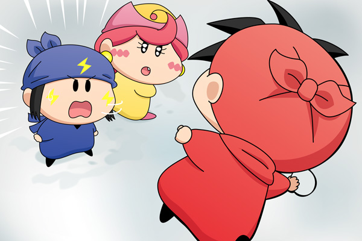

|
ヤシチ＆アクミ＆ネズミ(1)

ネズミ「拙者が攻撃を担当するから、アクミは拙者のために
雪玉を作るでござる」
アクミ「何だと！？ あたいだって攻撃に参加するよ。
だいたいネズミのためって何だよ」
ネズミ「この勝負に勝つための作戦でござる。
向こうはヤマネがいるから、勝つためには雪玉は
ひとつも無駄にできないでござる！」
アクミ「あたいはあたいのやりたいようるにやるっ」
ネズミ「アクミっ」
ヤシチ「ネズミ〜、覚悟っ！」
ネズミ「はっ、しまったでござる！」
ネズミはどんな理由でヤシチに負けるかを考えて、今回の絵を描きました。ネズミが負けて悔しがるシーンを想像していた方、ごめんなさい。
ヤシチチームはいろんな妖精が味方に付くものの、ネズミチームはアクミ一人だけ。頭のいいネズミは少ない人数で勝つための作戦を編みだしますが、アクミに受け入れられてもらえずケンカに…。敗因が仲間にあることで、ネズミは今後仲間に対する考え方を少しでも変えてくれればと思います。
この後ネズミはヤシチの雪玉を顔面に受け…。ネズミファンにとってはショッキングなシーンとなりそうです(^^;。(2011/2/26) |